JRuby on Elephants
Tim Cowlishaw
tim@timcowlishaw.co.uk / @mistertim
Map-reduce Framework

Data-intensive
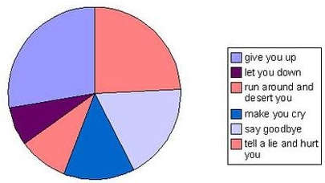
Analytics
Search
Machine learning
- Machine-learning library
- Abstraction layer on top of hadoop
- Implementations of many popular algorithms and techniques
What I'll cover
- Brief bit of theoretical background
- Kitten-detection with Mahout and JRuby
- Some JRuby Gotchas
- Java unpleasantness, and ways of overcoming it
- How well did we do?
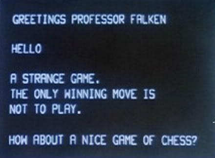
Machine learning
- There are two types of machine learning problem...
Supervised learning...
...and unsupervised learning
Supervised learning
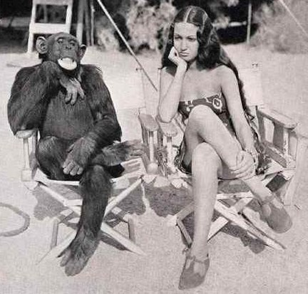
Learning by example
"Right answers" provided to algorithm in the form of training data
Supervised learning
- Classification
- Ranking
- Regression
Unsupervised learning
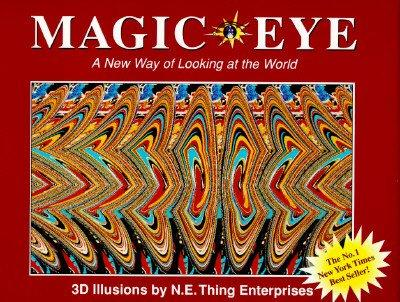
Finding hidden patterns
Unsupervised learning
- Clustering
- Collaborative Filtering (Recommendations)
Mahout can do all these things...
...at scale!
- But...
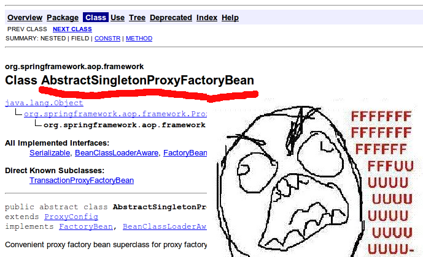
... Java. :-(
- Thankfully...
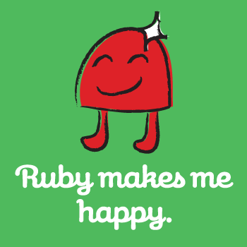
we have JRuby.
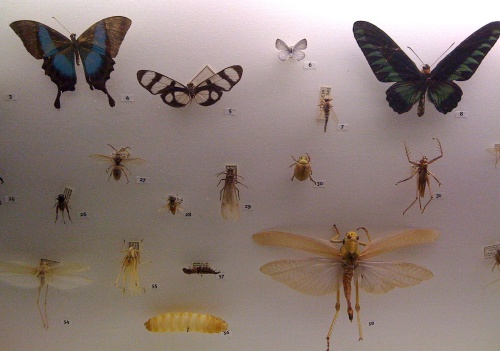
Classification
- An example...
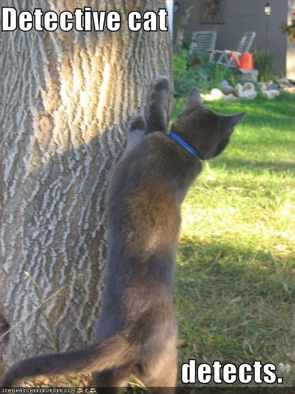
Kitten detection
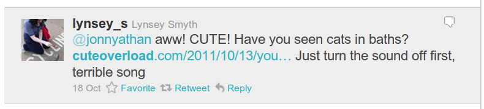
VS
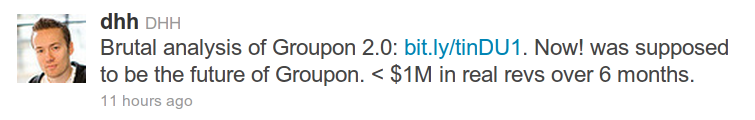
tweet =~ /((kitt(ah|eh|y)|OMG|cute|a+w+|squ+e+)!?)+/i- Job done!
Thanks!
Questions?
- Only joking...
- ...it's not quite that simple.
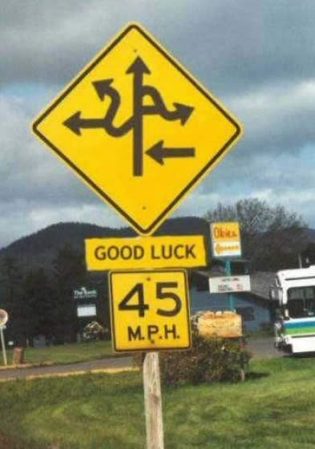
Why?
- What if we don't know what the signals are?
- Machine learning allows our system to work this out for itself
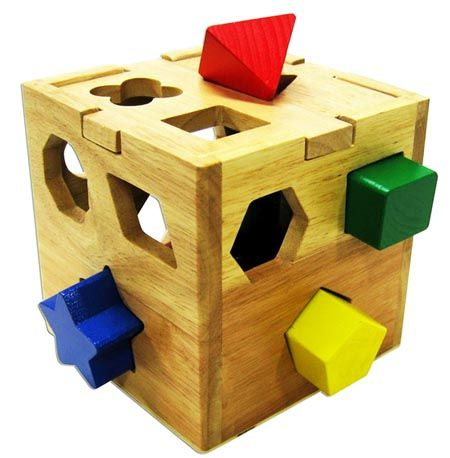
This is a Classification problem
- Use techniques from statistics
- Logistic regression
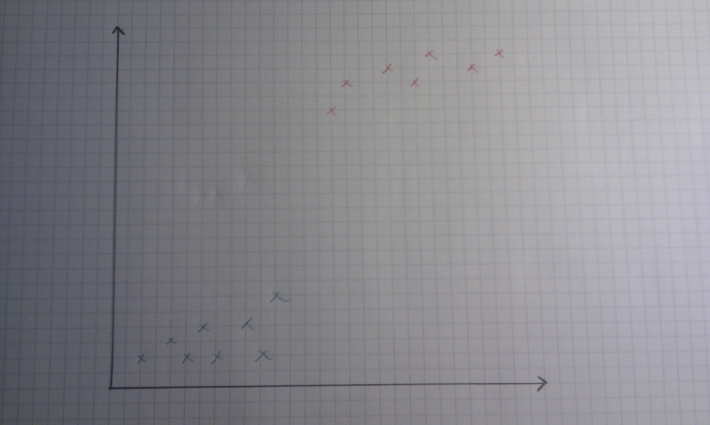
Logistic regression
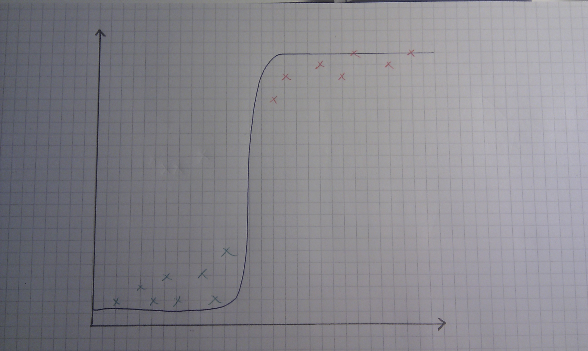
Logistic regression
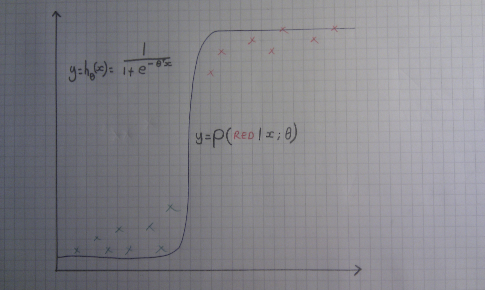
Logistic regression
Need to turn text into numbers
- Each training / test example becomes a vector
- Count TERM FREQUENCY
- Again, not that simple
Some words are more useful than others
- "autohagiographer" vs. "because"
- Stop-words
- IDF weighting
Some words are really the same
- Tokenization
- Normalisation
- Stemming
Porter Stemming Algorithm
Set of transformations, applied sequentially
gsub "sses", "ss"
gsub "ies", "i"
gsub "ss", "ss"
gsub "s", """The fattest cat" # input text
["The", "fattest", "cat"] # tokenized
["the", "fattest", "cat"] # normalized
["fattest", "cat"] # stop-words filtered
["fat", "cat"] # stemmedApache Lucene
- Powerful text manipulation library
- Easy to integrate with Mahout
analyzer = TextAnalyzer.new(Version::LUCENE_34) do |a|
a.filter StandardFilter
a.filter LowerCaseFilter
a.filter(StopFilter) {|token_stream|
[ a.version,
token_stream,
StandardAnalyzer::STOP_WORDS_SET]
}
a.filter PorterStemFilter
endCreating the model
- Training data
- ~3000 tweets
More Input!
- 3000 datapoints isn't that many
- Mahout doesn't perform so well on small datasets
This is a supervised learning technique
- Learning by example
- Each labelled with their class

DANGER!
- Target leak
- Allows model to 'cheat'
- Danger of 'overfitting'
- Strip out URLs
analyzer = TextAnalyzer.new(Version::LUCENE_34) do |a|
a.pre_processor do |text|
strip_usernames(strip_hashtags(strip_urls(text)))
end
a.filter StandardFilter
a.filter LowerCaseFilter
a.filter(StopFilter) {|token_stream|
[ a.version,
token_stream,
StandardAnalyzer::STOP_WORDS_SET]
}
a.filter PorterStemFilter
endTraining the model
classifier = LogisticRegressionClassifier.new(2, analyzer) do |classifier|
training_data.each do |row|
category = row[8].to_i
text = row[7]
classifier.train(category, text)
end
#... use the model to classify something ...#
endOpen vim now, Tim!
JRuby gotachas
JRuby gotchas
export CLASSPATH=$CLASSPATH:jruby-complete.jar
Jruby gotchas
SomeClass.class != SomeClass.java_classJruby gotchas
SomeGenericClass<SomeClass> /* Type info is erased! */
SomeGenericClass<Object> /* Becomes this at runtime */Jruby gotchas
public String anOverloadedFunction(String arg, int arg2)
public String anOverloadedFunction(Object arg, int arg2)Solution:
object.java_send(:an_overloaded_function,
[java.lang.String, Java::int],
"Hello there!", 42)How well did we do?
Evaluating ML models
How well did we do?
Training / testing set
data = CSV.read(DATA_FILE).shuffle
training_data = data[0..data.length/2]
testing_data = data[data.length/2..data.length-1]How well did we do?
- Metrics
- Proportion guessed correctly
- Log-likelihood
- Others for other types of problem (Precision, Recall, DCG, NDCG..)
How well did we do?
But can we detect kittens?
Proportion Correct: 0.921919770773639
Average Log-Likelihood: -0.245223695559474
Thanks!
Questions?
tim@timcowlishaw.co.uk / @mistertim